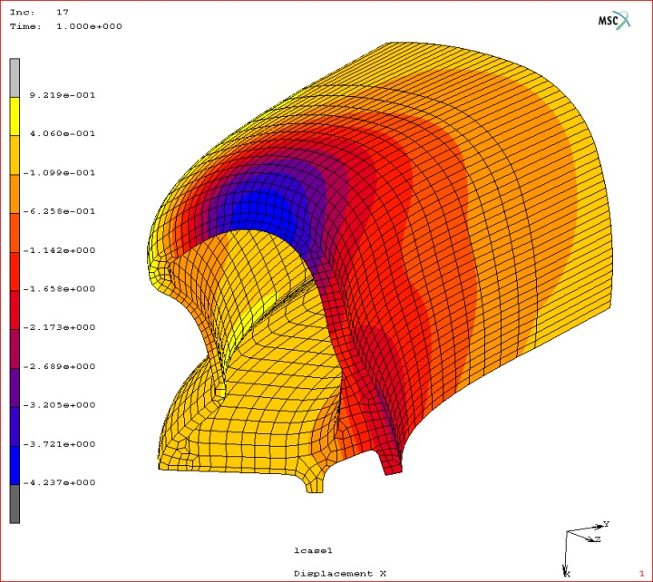

Dr. Tuncay Yüksel, FEA Uygulama Sorumlusu
|
Tuncay Bey, kendiniz ve firmada yaptýðýnýz çalýþmalar konusunda bilgi verir misiniz?
Dr. Tuncay Yüksel: 1993 yýlýnda Karadeniz Teknik Üniversitesi'nden (KTÜ) mezun oldum. 1995 yýlýnda yüksek lisansýmý bitirdim. 2000 yýlýnda doktora çalýþmamý tamamladým. Standard Profil A.Þ.'de Sonlu Elemanlar Analizi (FEA) konusunda 4 yýldýr çalýþýyorum.
Ben daha önce KTÜ Makine Mühendisliði Bölümü'nde asistan olarak çalýþýyordum. Oradaki çalýþmam kauçuk malzemeler ve FEA yöntemleri üzerine oldu. Burada, üretimde kauçuk kullanýlmasý nedeniyle çalýþmaya baþladým.
Buradaki çalýþmalarýmda, özellikle tasarým aþamasýnda hangi fitil geometrisinin kullanýlmasý gerektiði ve bu geometrinin ne kadar sizin dizayn kriterlerinize uyup uymayacaðýna FEA kullanarak karar veriyoruz. Bu iþin en zor yanlarýndan birisi, kullanýlan malzemenin kauçuk olmasý nedeniyle problemleri modellemek, çözmek ve doðruluðunu belirlemek bazen gerçekten zor oluyor.
Tabii burada en büyük amacýmýz yaptýðýmýz bu çalýþmalarý deneysel yöntemler kullanarak teyit ederek sonuçta parçayý en iyi þekilde üretmek. Otomobil gövde sýzdýrmazlýk elemanlarý için en büyük dizayn kriterleri kapý kapama kuvvetinin limitler dahilinde olmasý, fitilin kolay takýlýp zor çýkartýlabiliyor olmasý, su, ses, toz gibi sýzdýrmazlýk kriterlerini taþýyor olmasýdýr. Bunlarýn içinde en ince nokta, temas bölgelerinin tespit edilmesi gerekiyor. CAD ortamýnda programda bunlarý hazýrlayabiliyorsunuz. Ama baðýl hareketler çok olduðu için de kapý, gövde, cam gibi yerlerde etkileþim esnasýnda profiller ne kadar deforme oluyor? Nasýl bir þekil alýyor? Ne kadar kuvvet uyguluyor? Bunlarý ne kadar gerçeðe yakýn bir þekilde öngörebilirseniz dizaynýnýzý da o kadar güçlü ve iyi yapabilirsiniz.
Biz yurt dýþýndaki firmalarla çalýþtýðýmýz için zamanýnda cevap verebilmemiz oldukça önemli, bu nedenle doðru ve hýzlý karar vermek zorundayýz.
Analiz için hangi programlarý kullanýyorsunuz?
Dr. Tuncay Yüksel: Þu anda kullandýðým program MSC.Marc, diðer programlarla da çalýþtým. Bu programý tercih etmemizin nedeni, özellikle kauçuk ile ilgili problemlerin çözümünde oldukça baþarýlý olmasý. MSC.Marc ile gayet iyi sonuçlar elde edebiliyorum.
Unix ortamýnda mý çalýþýyorsunuz?
Dr. Tuncay Yüksel: Hayýr, Unix üzerinde çalýþmýyoruz. Tamamen Windows 2000 ortamýnda çalýþýyoruz. Unix ortamýnda çalýþmamýzýn nedeni, Unix iþletim sisteminin
yönetiminin zorluðu, diðer Windows uygulamalarý ile uyumunu saðlamak için ek uðraþlar gerektirmesi olarak kabaca sayýlabilir.
Analiz için hangi programlarý kullanýyorsunuz?
Dr. Tuncay Yüksel: MSC.Marc, Mentat ve Msc.Patran. Mentat ve Patran "pre-post processing " programýdýr. Marc ise çözüm modülüdür. Patran son yýllarda birçok farklý yazýlýmla entegrasyonunu çok iyi saðladý ve özellikle 3D problemlerde büyük kolaylýk saðlýyor....
Size yurtdýþýndan deðiþik formatlarda modeller geliyordur. Firma içinde kaç deðiþik programla çalýþýyorsunuz?
Dr. Tuncay Yüksel: Biz ana sanayiye baðýmlý olarak çalýþtýðýmýz için her ana sanayi farklý CAD programlarýyla çalýþýyor. Ýþte, Renault, Volkswagen CATIA ile çalýþýrken, Opel, General Motors UG ile çalýþýyor. Ford ise I-deas ile çalýþýyor. Bunlarýn hepsi farklý formatlarda ve hepsiyle birlikte iyi çalýþmalýsýnýz.
FEA konusunda çalýþan bir tek siz misiniz? Yoksa baþkasý da var mý?
Dr. Tuncay Yüksel: Genelde ben çalýþýyorum. Ama yardýmcý olan arkadaþlar da oluyor.
Yaptýðýnýzý bu analizleri doðrulamak için hangi deneysel yöntemleri kullanýyorsunuz?
Dr. Tuncay Yüksel: Her þeyden önce mümkün olduðu kadar problemin basit modelini kurabilecek deneylerden faydalanýyoruz. Benzer problemler için halihazýrda mevcut deneyleri modelleyerek sonuçlarý bunlarla karþýlaþtýrýyoruz. Her çözdüðünüz problem sizin bir sonraki problemin çözümüne bir tecrübe olarak yansýyor ve sonuçlarý rahatlýkla kullanabiliyorsunuz.
Yeni bir fitil tasarýmý toplam ne kadar süre alýyor?
Dr. Tuncay Yüksel: Bu tamamýyla araca baðlý. Tasarlanacak aracýn evreleri var. Bu süreçte araç kasasýnda yapýlan deðiþikliklerle birlikte sizde çalýþmalarýnýzý yeniden gözden geçirmek zorundasýnýz. Uygulanacak profiller belirlendikten sonra, kaynak bölgelerinin tasarýmý da ek süre alýyor. Sonuçta gerekli süre, çalýþtýðýnýz projenin büyüklüðüne göre deðiþiyor. Genellikle 6 ay veya 1 sene gibi veya daha da kýsa bir sürede ilk tasarým sonuçlarý elde edilmiþ oluyor.
Tasarým ve analiz sürecinde kauçuk malzemenin mekanik davranýþ özelliklerinin doðru modellenmesi belki de en önemli sorunu oluþturuyor?
Dr. Tuncay Yüksel: Evet, kesinlikle. Kauçuk hep yaþayan bir materyal olarak adlandýrýlýr. Bizim bugün malzeme özelliklerini ölçüp biçtiðimiz bir kauçuk parçanýn üç beþ gün sonra vereceði mekanik cevap çok farklý olabilir... Çekme testi, basma testi gibi, mekanik testlerle FEA için malzeme özelliklerini belirlemeye çalýþýyoruz....
Tasarým ve analizlerinizin doðru olup olmadýðýný anlamanýn en iyi yolu bir deneme ekstrüzyon kalýbý yaparak prototip fitil imal etmek ve test etmek herhalde?
Dr. Tuncay Yüksel: Deneme ekstrüzyon kalýbý yapmak yerine, maliyetleri düþürmek ve zamandan kazanmak amacýyla basit kalýplar yapmaya çalýþýyoruz. Tabii son aþamada, gerçek testi, seri imalat þartlarýndaki ekstrüzyon sürecinde elde edebilirsiniz. Çünkü çok farklý materyaller birlikte ekstürüze edilebiliyor ve üretim hattýndaki proses (kauçuk piþirme sýcaklýk deðiþimleri gibi) biraz farklý olabiliyor.
Testler için model imalatýnda hýzlý prototip teknolojileri de (3D Printing) kullanýlabilir. Yalnýz bizim için, deneylerde kullanacaðýmýz fitile ait malzemenin seri imalatta kullanýlacak kauçuk ile tamamýyla ayný özelliklere sahip olmasý çok önemli.
Bir konu daha var; Siz prototip fitil yapabilirsiniz ama aracýn ilk tasarým aþamasýnda aracýn kasasý hala yapýlmamýþ olabiliyor. Bu durumda onun da modelini veya prototipini üretmek çok daha pahalý olabiliyor. Her istediðinizde fiziksel deney yapma imkaný bulamýyorsunuz; Ýþte bu durumda tamamen FEA ile sonuca gitmek zorunda kalýyorsunuz...
Araç üzerinde yapýlan ilk testlerde, örneðin kapý kapama kuvveti umduðunuzdan yüz 10 daha fazla oldu; Tasarýmýn deðiþmesi lazým. Ya profilin kesiti ile oynanacak ya da malzemeyle? Buna nasýl karar veriyorsunuz?
Dr. Tuncay Yüksel: Olasý deðiþikliklere karar veriyoruz. Daha sonra bunlarý simüle ediyoruz. Hangisi daha uygun, buna karar veriyoruz. Ýþte; Kapý kuvvetini ne kadar düþürmeliyiz? Ne kadar yükseltmeyiz? Bu konuda FEA bize çok yardýmcý oluyor.
Zaten o aþamaya gelindiði zaman elinizde rölatif bir çözüm olduðu için, yani hata iyice azaldýðý için artýk bilgisayar üzerinde yapýlan düzeltmenin de doðru olma ihtimali iyice artmýþ oluyor..
Bu meslekte kariyer yapmak isteyen, FEA konusunda çalýþma yapacak gençlere neler tavsiye edersiniz?
Dr. Tuncay Yüksel: Açýkçasý ben bu konuda Türkiye'nin eleman açýðý olduðunu düþünenlerden birisiyim. Bence bu tip yöntemlerle uðraþmak sizin mühendislik kabiliyetinizi geliþtiriyor. Çünkü bir problemin matematik formülünü doðru bir þekilde kurabilmeniz ona hakim olduðunuzu gösterir. Bence çok önemli bu açýdan.
Bu alanda baþarýlý olmak için bir mastýr çalýþmasý yapýlmasý teorik altyapýnýzýn güçlenmesini saðlayacaktýr. Bu tür programlarýn bir kara kutu þeklinde kullanýlmamasý gerekiyor. Tamamýyla teorisine hakim olmalýsýnýz ki sonuçlarý saðlýklý þekilde yorumlayabilin...
Sonlu Elemanlar Analizi (FEA) uygulamalarý:

CAD tasarýmý sonrasý analizler için MSC / MARC sonlu elemanlar analiz (FEA) yazýlýmý kullanýlýyor. Kauçuk malzemeler, nonlinear davranýþý sebebiyle analizi oldukça zor bir konu...
Simülasyonlarýn pratikte kullanabilecek doðru sonuç verebilmesi için birçok fiziksel deney ve testlerden faydalanýlýyor...
Sunum: Standard Profil A.Þ.'nin ürün geliþtirme çalýþmalarýný tanýtan ve uygulama örneklerine ait birçok resim içeren bir MS PowerPoint sunumu indirmek için týklayýnýz;
Standard-Profil_Urun-Gelistirme.zip (24MB)
 Standard Profil A.Þ. hakkýnda: (www.standardprofil.com) Standard Profil A.Þ. hakkýnda: (www.standardprofil.com)
Yurt içindeki ve dýþýndaki otomotiv üreticilerine sýzdýrmazlýk profilleri üreten bir yan sanayi kuruluþu olan Standard Profil A.Þ. 1977 yýlýnda Düzce Konuralp Hamamaltý mevkiinde 18.000 m2 'lik bir alana kurulmuþtur. Firma, ilk seri üretime Renault 12 model otomobiller için kapý fitili üreterek baþlamýþtýr.
Bugün, yaklaþýk 176.000 m2 bir alan üzerinde 50.653 m2 kapalý alana sahiptir ve geliþimini hýzla sürdürmektedir. 500 çalýþaný olan firma yýlda 80 milyon Euro ciro yapýyor
Standard Profil, ileri teknolojisi sayesinde tekli ya da çoklu sertlikte - kauçuktan ya da PVC - TPV - TPE'den mamul sýzdýrmazlýk fitillerini, sac, alüminyum, paslanmaz çelik, tel takviye ve floklu olarak üretmektedir.
Geliþtirici ve tedarikçi firma olarak bir çok projeye imza atmýþ olan Standard Profil, Türkiye'deki otomotiv sanayi firmalarýnýn tüm ihtiyaçlarýna cevap vermekte ve yurt dýþýnda ise General Motors, Ford, Volkswagen, Audi ve Fiat gibi OEM firmalarýnýn Almanya, Belçika, Ýspanya, Portekiz, Ýngiltere, Ýtalya, Polonya, Avustralya, Brezilya, Meksika gibi tüm dünya coðrafyasýna daðýlmýþ fabrikalarýna sýzdýrmazlýk fitili ihraç etmektedir.
Standard Profil A.Þ., 2004 yýlýndaki kalite, fiyat, teknoloji ve servisteki performansýndan dolayý GM tarafýndan Dünya çapýnda 78 yan sanayi firmasýna verilen "Yýlýn Tedarikçisi" ödülüne 6. kez layýk görülmüþtür.
Ýlgili haber:
12-10-2005 > Ürün geliþtirmenin tüm aþamalarýnda CAD/CAM/CAE ve 3D optik tarama teknolojilerini baþarýlý ve etkin þekilde kullanan Standard Profil A.Þ., 6. kez General Motors tarafýndan verilen "Yýlýn Tedarikçisi" ödülünü almaya hak kazandý
Ýlgili makale:
Otomobil gövde sýzdýrmazlýk elemaný tasarýmýnda sonlu elemanlar analiz yönteminin kullanýlmasý:
Dr. Tuncay Yüksel, FEA Uygulama Sorumlusu, Standard Profil A.Þ., Düzce, Ekim 2005
|